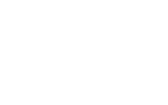
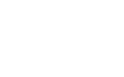

Molecular Models
You will need to use your mobile device camera to scan the following VR marker (
DrChok.github.io/ejc-marker.png) to access the molecular models. You can print out the marker on a piece of white paper for ease of scanning. Otherwise, you can also download the image and scan the VR marker on another device.
| Title (link) |
Description |
| But-2-ene |
Explore the reason behind the differences in stability of cis-but-2-ene and trans-but-2-ene from the space-filling models of the two cis-trans isomers. |
   |
| Cyclohexene |
Examine the structures of cis- and trans-cyclohexene to understand why cyclohexene can only adopt a cis-arrangement. |
  |
| Cyclooctene |
Examine the structures of cis- and trans-cyclooctene to understand why cyclooctene can exists in both cis- and trans-arrangement, unlike cyclohexene. |
  |
| Enantiomerism |
Examine the structures of the two mirror images of bromochloroiodomethane and see that they are not superposable, existing as a pair of enantiomers. |
  |
| Tartaric Acid |
Examine the four possible stereoisomers of tartaric acid with 2 chiral centres. There is one pair of enantiomers. The remaining two stereoisomers possess an internal mirror plane each, and are actually the same stereoisomers. Hence there are only three distinct stereoisomers of tartaric acid. |
    |
{kind=link}